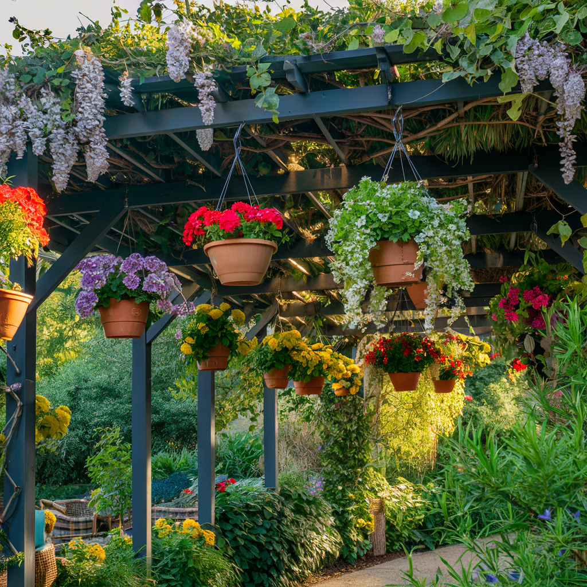

Symbole absolu de la Provence et du sud de la France, la lavande (Lavandula) est bien plus qu'une simple plante ornementale. Son parfum envoûtant, sa floraison d'un violet éclatant, sa capacité à attirer les abeilles et les papillons, ses innombrables usages en cuisine, en cosmétique et en phytothérapie, et sa résistance remarquable à la sécheresse en font une plante véritablement polyvalente et indispensable au jardin. Originaire du bassin méditerranéen, la lavande s'est répandue dans les jardins du monde entier, du sud de l'Angleterre au Japon, de la Californie à l'Australie. Bonne nouvelle pour les jardiniers de toutes les régions de France : avec le bon choix de variété et quelques précautions simples, la lavande peut prospérer bien au-delà de son berceau provençal, y compris dans le nord du pays et en altitude. Ce guide complet vous dévoilera tous les secrets pour planter, entretenir, tailler et récolter la lavande avec succès, quelle que soit votre situation.
Les principales variétés de lavande
Le genre Lavandula comprend une trentaine d'espèces et des centaines de cultivars. Choisir la bonne variété en fonction de votre climat, de votre sol et de l'usage que vous souhaitez en faire est la clé d'une culture réussie. Voici les espèces les plus couramment cultivées dans les jardins français.
Lavandula angustifolia : la lavande vraie
Aussi appelée lavande officinale ou lavande fine, c'est la reine incontestée des lavandes. Originaire des collines sèches et calcaires de Provence, elle forme un sous-arbuste compact et arrondi de 40 à 60 cm de hauteur, au feuillage persistant gris-vert étroit et aromatique. Ses épis floraux, portés sur de longues tiges dressées au-dessus du feuillage, sont d'un bleu-violet intense et dégagent le parfum le plus fin et le plus délicat de toutes les lavandes. C'est l'espèce la plus rustique, capable de résister à des températures allant jusqu'à -20 °C, ce qui la rend cultivable dans presque toutes les régions de France. Son huile essentielle, la plus prisée en aromathérapie et en parfumerie, est réputée pour ses propriétés calmantes, antiseptiques et cicatrisantes. Parmi les cultivars remarquables : 'Hidcote' (compact, violet foncé, idéal pour les bordures), 'Munstead' (floraison précoce, très rustique), 'Alba' (fleurs blanches), 'Rosea' (fleurs rose pâle) et 'Mailette' (rendement en huile essentielle exceptionnel, variété emblématique de la culture provençale).
Lavandula stoechas : la lavande papillon
Immédiatement reconnaissable à ses inflorescences spectaculaires surmontées de grandes bractées ressemblant à des ailes de papillon, la lavande papillon est originaire du pourtour méditerranéen. Elle forme un arbuste de 50 à 80 cm au feuillage gris-vert plus large que celui de l'angustifolia. Sa floraison est plus précoce (dès avril-mai) et souvent remontante, offrant une seconde floraison en fin d'été si l'on supprime les fleurs fanées. Contrairement à la lavande vraie, la stoechas préfère les sols acides à neutres et ne tolère pas du tout le calcaire. Elle est aussi moins rustique, résistant généralement jusqu'à -8 à -10 °C seulement. Elle convient parfaitement aux jardins de la façade atlantique, du Midi et au littoral méditerranéen. En climat plus froid, cultivez-la en pot pour pouvoir l'hiverner. Les variétés 'Anouk', 'Papillon', 'Kew Red' (rare fleurs roses à rouges) et 'With Love' sont particulièrement appréciées pour les jardins.

Lavandula x intermedia : le lavandin
Le lavandin est un hybride naturel entre Lavandula angustifolia et Lavandula latifolia (la lavande aspic). C'est le géant de la famille : il forme des touffes imposantes de 60 à 90 cm de hauteur et jusqu'à 1 mètre de large. Ses épis floraux sont plus longs et plus fournis que ceux de la lavande vraie, offrant un spectacle visuel impressionnant. Le lavandin est la lavande la plus cultivée commercialement dans le monde, car il produit trois fois plus d'huile essentielle que l'angustifolia — une huile plus camphrée et moins raffinée, utilisée principalement en parfumerie fonctionnelle (lessives, savons, produits ménagers). Sa rusticité est bonne, supportant des températures jusqu'à -15 °C environ. C'est un excellent choix pour les grandes bordures, les haies basses et les talus. Les variétés les plus connues sont 'Grosso' (la plus cultivée commercialement, épis longs et foncés), 'Dutch' (compact et très fleuri), 'Provence' (au parfum intense) et 'Phenomenal' (résistante à l'humidité et aux maladies, excellente pour les climats plus frais).
Lavandula latifolia : la lavande aspic
La lavande aspic se distingue par ses feuilles plus larges et plus grises, et ses épis floraux ramifiés portés sur des tiges latérales. Son huile essentielle, au parfum plus camphré et herbacé, est réputée en médecine populaire pour soulager les piqûres d'insectes et les brûlures — d'où son nom de lavande aspic, car elle était traditionnellement utilisée contre les morsures de vipère. Moins rustique que l'angustifolia (résistante jusqu'à -12 °C environ), elle convient aux jardins du sud et du centre de la France.
Lavande ou lavandin : comment les distinguer ?
La lavande vraie (angustifolia) porte un seul épi floral au sommet de chaque tige. Le lavandin (intermedia) porte un épi principal accompagné de deux petits épis latéraux à la base, formant un « chandelier » caractéristique. Le lavandin est aussi plus grand, plus vigoureux et a un parfum plus camphré. Autre différence importante : la lavande vraie produit des graines fertiles, tandis que le lavandin, étant un hybride, est stérile et ne se reproduit que par bouturage.
Planter la lavande : réussir dès le départ
La lavande est une plante méditerranéenne façonnée par des millénaires d'adaptation aux sols pauvres, secs et ensoleillés. Respecter ces besoins fondamentaux lors de la plantation est la condition absolue de la réussite. La bonne nouvelle, c'est que la lavande demande très peu : du soleil, un bon drainage et de la patience.
Quand planter la lavande ?
La période idéale pour planter la lavande dépend de votre climat. Dans les régions méditerranéennes et le sud de la France, plantez de préférence en automne (septembre-octobre) : les pluies d'automne et la douceur hivernale favoriseront un excellent enracinement. Dans les régions plus froides du nord et de l'est, attendez le printemps (avril-mai), après les dernières gelées, pour laisser à la plante tout l'été pour s'installer solidement avant son premier hiver. Évitez la plantation en plein été (stress hydrique) et en plein hiver (gel).
L'emplacement idéal
La lavande exige le plein soleil : au minimum 6 à 8 heures d'ensoleillement direct par jour. C'est non négociable. À l'ombre, elle s'étiole, fleurit peu ou pas, et devient vulnérable aux maladies fongiques. Choisissez l'endroit le plus ensoleillé et le plus chaud de votre jardin. Un emplacement en pente légère orienté sud ou sud-ouest est idéal car il favorise le drainage et capte la chaleur. Les pieds de mur exposés au sud, les rocailles, les talus et les terrasses sont des emplacements de prédilection. Protégez la lavande des vents froids du nord en hiver, mais assurez une bonne circulation d'air autour des plantes pour prévenir les maladies.
Le sol : pauvre et bien drainé
C'est le point crucial. La lavande déteste les sols lourds, argileux et constamment humides, qui provoquent la pourriture des racines — la première cause de mortalité chez la lavande. Le sol idéal est caillouteux, calcaire, pauvre en matière organique et parfaitement drainé. Si votre sol est argileux ou lourd, vous avez deux options. La première consiste à planter sur une butte surélevée de 15 à 20 cm, constituée d'un mélange de terre du jardin, de gravier et de sable grossier à parts égales. La seconde est de créer un massif surélevé délimité par des pierres ou des bordures et rempli d'un substrat drainant. N'ajoutez jamais de compost ou de fumier dans le trou de plantation : la lavande prospère dans la pauvreté et un sol trop riche produit un feuillage mou et peu parfumé, sensible au gel et aux maladies.
La plantation pas à pas
Creusez un trou deux fois plus large et légèrement plus profond que la motte. Si le sol est lourd, déposez une couche de 5 cm de gravier au fond pour assurer un drainage impeccable. Mélangez la terre extraite avec un tiers de gravier ou de sable grossier si elle est compacte. Dépotez la plante et démêlez délicatement les racines si elles forment un chignon serré. Placez la motte dans le trou de sorte que le haut de la motte soit au niveau du sol ou très légèrement au-dessus — ne jamais enterrer le collet. Comblez, tassez légèrement et arrosez une fois pour établir le contact entre les racines et la terre. Ensuite, n'arrosez que si le temps reste sec pendant les deux ou trois premières semaines. Un paillage minéral (gravier, pouzzolane, ardoise concassée) de 3 à 5 cm autour du pied est idéal : il conserve la chaleur, empêche les éclaboussures de terre sur le feuillage et maintient le collet au sec. Évitez absolument les paillis organiques (écorces, paille) qui retiennent l'humidité au contact du collet et favorisent la pourriture. Espacez les plants de 40 à 60 cm pour les variétés compactes, et de 80 cm à 1 mètre pour les lavandins.

Entretien de la lavande : moins, c'est mieux
L'entretien de la lavande est d'une simplicité déconcertante. C'est une plante qui donne le meilleur d'elle-même quand on la laisse tranquille. Trop d'eau, trop d'engrais, trop de soins : voilà ce qui tue la lavande plus sûrement que le gel ou la sécheresse.
Arrosage : la sobriété avant tout
Une fois bien établie (après la première année), la lavande en pleine terre n'a besoin d'aucun arrosage dans la plupart des régions françaises. Ses racines profondes et son feuillage gris couvert de poils fins qui réduisent l'évaporation lui permettent de résister à des sécheresses prolongées. Durant la première année de plantation, arrosez une fois par semaine en l'absence de pluie pour favoriser l'enracinement, puis espacez progressivement. En été caniculaire, un arrosage profond tous les 15 jours suffit pour les plants établis en sol très drainant. Les lavandes en pot nécessitent un arrosage plus régulier, environ une fois par semaine en été, en laissant toujours le substrat sécher complètement entre deux arrosages. Arrosez toujours au pied, jamais sur le feuillage, et de préférence le matin pour que l'eau évapore avant la nuit.
Fertilisation : l'art du rien
N'engraissez jamais la lavande. C'est un conseil contre-intuitif pour beaucoup de jardiniers, mais il est fondamental. Dans son habitat naturel, la lavande pousse dans des sols calcaires squelettiques où rien d'autre ne survit. Un sol riche en nutriments, surtout en azote, provoque une croissance molle et exubérante, un feuillage vert foncé au lieu du gris argenté caractéristique, un parfum affaibli, une résistance au froid diminuée et une durée de vie raccourcie. Si votre lavande jaunit ou dépérit, le problème vient presque certainement de l'excès d'humidité ou d'un sol trop riche, jamais d'un manque de nutriments. La seule exception concerne les lavandes en pot cultivées depuis plusieurs années dans le même substrat : un apport très léger d'engrais pour plantes méditerranéennes au printemps peut être bénéfique.
Le désherbage
Maintenez la base des plants propre et dégagée. Les mauvaises herbes qui poussent dans la touffe de lavande retiennent l'humidité et favorisent les maladies. Un paillage minéral (gravier, pouzzolane) limite efficacement le désherbage. Si vous devez désherber, faites-le à la main pour ne pas endommager les racines superficielles.
"La lavande est l'alchimiste du jardin : elle transforme le soleil brûlant et la terre la plus ingrate en un parfum qui enchante l'âme et nourrit les abeilles. Elle nous enseigne que la beauté naît souvent de la frugalité."
Tailler la lavande : le geste essentiel
La taille de la lavande est le seul geste d'entretien véritablement indispensable. Sans taille régulière, la lavande se dégarnit rapidement de la base, devient ligneuse et prend un aspect désordonné et vieillissant dès la quatrième ou cinquième année. Une taille annuelle bien réalisée maintient un port compact et arrondi, favorise une floraison abondante et prolonge considérablement la durée de vie de la plante.
Quand tailler ?
La lavande se taille deux fois par an dans l'idéal. La première taille, la plus importante, se fait juste après la floraison, généralement en août-septembre. C'est le moment de supprimer les tiges florales fanées et de raccourcir l'ensemble de la touffe. La seconde taille, plus légère et facultative, se pratique en mars-avril, au moment où la végétation redémarre. Elle permet de redonner une forme arrondie régulière et de supprimer les éventuels dégâts du gel. Ne taillez jamais la lavande en automne tardif ou en hiver : les nouvelles pousses stimulées par la taille seraient vulnérables au gel.
Comment tailler ?
Utilisez un sécateur bien aiguisé ou une cisaille à haie pour les grandes bordures. Lors de la taille post-floraison, supprimez toutes les tiges florales et raccourcissez les pousses de l'année d'environ un tiers de leur longueur. L'objectif est de conserver une forme de dôme compact et régulier. La règle d'or absolue est de ne jamais couper dans le vieux bois nu : la lavande ne repousse pas à partir du bois ligneux dépourvu de feuilles. Taillez toujours dans la partie verte et feuillue des tiges, en laissant au minimum 2 à 3 cm de feuillage vert sous la coupe. Si vous négligez la taille pendant plusieurs années et que la plante s'est trop dégarnie, il est malheureusement souvent trop tard pour la rajeunir. Mieux vaut alors la remplacer par un jeune plant.
La taille de formation des jeunes plants
Durant les deux premières années après la plantation, pincez les extrémités des tiges au printemps pour encourager la ramification et obtenir une touffe bien fournie dès le départ. La première année, sacrifiez même les fleurs en coupant les tiges florales dès leur apparition : cela redirige l'énergie de la plante vers le développement d'un système racinaire vigoureux et d'une charpente dense. Dès la deuxième année, vous pourrez laisser la plante fleurir librement et vous émerveiller devant le spectacle.

Récolter la lavande : le bon moment et les bonnes méthodes
La récolte de la lavande est un moment privilégié qui récompense tous les efforts du jardinier par un festival de couleurs et de parfums. Que vous récoltiez pour les bouquets secs, les sachets parfumés, la cuisine ou la distillation, le timing est crucial pour obtenir la meilleure qualité.
Quand récolter ?
Le moment idéal pour récolter la lavande se situe juste avant que les fleurs soient complètement ouvertes, quand les deux tiers inférieurs de l'épi sont en fleur et que le tiers supérieur est encore en bouton. C'est à ce stade que la concentration en huiles essentielles est maximale et que le parfum est le plus intense. Récoltez par une matinée ensoleillée, après que la rosée se soit évaporée mais avant les heures les plus chaudes de la journée (la chaleur fait évaporer les huiles essentielles). Selon les variétés et les régions, la période de récolte s'étend généralement de fin juin à début août.
Comment récolter ?
Coupez les tiges florales en bouquets avec un sécateur ou une faucille bien aiguisée. Prélevez des tiges longues (15 à 20 cm sous l'épi) pour faciliter la confection de bouquets. Pour les bordures et les haies, cette récolte fait office de taille post-floraison — vous faites d'une pierre deux coups. Regroupez les tiges par bouquets de 30 à 50, attachez-les avec un élastique (qui se resserre en séchant) et suspendez-les la tête en bas dans un endroit sec, aéré, sombre et chaud. Le séchage prend 2 à 3 semaines. Une fois sèches, les fleurs se détachent facilement des tiges en passant simplement la main le long de l'épi.
Conservation
Les fleurs de lavande séchées conservent leur parfum pendant 1 à 3 ans si elles sont stockées correctement. Placez-les dans des sachets en tissu, des bocaux en verre hermétiques ou des boîtes en métal, à l'abri de la lumière et de l'humidité. Pour raviver le parfum d'un sachet qui s'affaiblit, froissez-le entre vos mains : ce geste libère les huiles essentielles piégées dans les cellules des fleurs. Les tiges peuvent aussi être utilisées dans des couronnes décoratives ou brûlées dans la cheminée pour parfumer la maison.
Astuce de pro : la récolte commerciale
En Provence, les lavandiculteurs récoltent le lavandin à la machine quand les épis commencent tout juste à faner, car c'est à ce stade que le rendement en huile essentielle est le plus élevé. Pour un usage domestique (bouquets, sachets, cuisine), récoltez un peu plus tôt, quand les couleurs sont les plus vives. Vous pouvez aussi récolter en deux temps : une première coupe pour les bouquets frais, et le reste pour le séchage quelques jours plus tard.
Les mille usages de la lavande
La lavande est véritablement une plante à tout faire, utilisée depuis l'Antiquité romaine pour parfumer les bains (du latin lavare, laver) et depuis le Moyen Âge en médecine populaire. Voici les principaux usages que vous pouvez explorer avec votre récolte.
En cuisine
La lavande est un ingrédient surprenant et délicat en cuisine, à condition de l'utiliser avec parcimonie — son arôme puissant peut vite devenir envahissant. Les fleurs fraîches ou séchées de Lavandula angustifolia (jamais de stoechas, au goût trop camphré) parfument subtilement les desserts : crèmes brûlées, glaces, sorbets, biscuits, madeleines et gâteaux. Elles se marient aussi remarquablement avec les plats salés méditerranéens : agneau rôti, grillades, ratatouille et fromage de chèvre. La lavande entre dans la composition du mélange provençal d'herbes de Provence aux côtés du thym, du romarin et de la sarriette. Le sirop de lavande maison (fleurs infusées dans un sirop de sucre) est délicieux dans les cocktails, les limonades et les yaourts. Le miel de lavande, produit par les abeilles butinant les champs de Provence, est l'un des miels les plus fins et les plus recherchés de France.
En beauté et bien-être
L'huile essentielle de lavande vraie est l'une des plus polyvalentes de l'aromathérapie. Quelques gouttes sur l'oreiller favorisent le sommeil et la relaxation. En massage diluée dans une huile végétale, elle soulage les tensions musculaires et le stress. Appliquée pure sur une petite brûlure ou une piqûre d'insecte, elle apaise et désinfecte. Pour la beauté, l'eau florale de lavande (hydrolat) est un tonique facial purifiant idéal pour les peaux grasses et à imperfections. Un bain additionné d'une infusion concentrée de lavande ou de quelques gouttes d'huile essentielle offre un moment de relaxation profonde, fidèle à la tradition romaine du lavare.
Comme insectifuge naturel
La lavande est un répulsif naturel redoutablement efficace contre de nombreux insectes indésirables. Les sachets de lavande séchée placés dans les armoires et les tiroirs repoussent les mites des vêtements depuis des siècles — c'est la méthode traditionnelle la plus fiable et la plus agréable qui soit. Quelques gouttes d'huile essentielle sur un mouchoir ou un diffuseur éloignent les moustiques en été. Au jardin, les plants de lavande à proximité des fenêtres et des portes limitent l'entrée des mouches et des moustiques dans la maison. La lavande repousse aussi les pucerons quand elle est plantée en compagnonnage avec les rosiers et les légumes du potager — une association aussi belle qu'utile.
Au jardin : la plante compagne idéale
La lavande est une extraordinaire plante compagne. Sa floraison abondante attire les pollinisateurs essentiels — abeilles, bourdons, papillons et syrphes — qui polliniseront par la même occasion vos légumes et vos fruitiers. Plantée en bordure du potager, elle repousse certains ravageurs tout en attirant leurs prédateurs naturels. Elle s'associe magnifiquement avec les rosiers (un classique du jardin anglais), les graminées ornementales (stipa, fétuque bleue, miscanthus), les sauges, les gauras, les agapanthes, les cistes et les santolines. En haie basse le long d'une allée ou en bordure de massif, elle crée un effet structurant d'une élégance intemporelle.

Multiplier la lavande
La lavande se multiplie facilement par bouturage, ce qui est la méthode la plus fiable et la plus rapide pour obtenir des plants identiques à la plante mère. C'est aussi un moyen économique de créer des bordures et des haies de lavande sans dépenser une fortune en plants de pépinière.
Le bouturage : la méthode royale
Le meilleur moment pour bouturer la lavande est en juin-juillet (boutures herbacées) ou en août-septembre (boutures semi-ligneuses). Prélevez des extrémités de tiges non fleuries de 8 à 12 cm de longueur. Coupez juste en dessous d'un noeud avec un sécateur bien aiguisé. Supprimez les feuilles sur la moitié inférieure de la tige. Trempez la base dans de la poudre d'hormones de bouturage (facultatif mais améliore le taux de réussite). Plantez les boutures dans un mélange très drainant composé de moitié sable grossier et moitié terreau léger, dans des godets individuels ou une terrine. Arrosez modérément et placez à l'ombre légère. Ne couvrez pas d'un sac plastique contrairement à la plupart des boutures : la lavande déteste l'humidité stagnante. L'enracinement prend 3 à 6 semaines. Vous reconnaîtrez les boutures enracinées à l'apparition de nouvelles pousses au sommet. Hivernez les jeunes plants sous châssis ou dans un local hors gel, et plantez au jardin le printemps suivant.
Le semis
Le semis de lavande est possible mais plus aléatoire et plus long. Semez en février-mars en terrine à l'intérieur, sur un substrat très fin et bien drainé. Les graines de lavande ont besoin de lumière pour germer : ne les recouvrez pas, contentez-vous de les presser légèrement dans le substrat. La germination est lente et irrégulière : comptez 2 à 4 semaines, parfois davantage. Les plants issus de semis seront variables si la lavande mère est un hybride (lavandin). Pour les espèces pures comme l'angustifolia, le semis donne de bons résultats, mais les plants mettront 2 à 3 ans à fleurir.
Le marcottage
Le marcottage est une technique simple et presque infaillible pour les lavandes à port étalé. Au printemps, choisissez une branche basse et souple, entaillez légèrement l'écorce à l'endroit qui sera enterré, courbez-la vers le sol et maintenez-la en terre sous un caillou ou une agrafe métallique. Recouvrez de quelques centimètres de terre et gardez humide. Les racines se forment en quelques mois. Sevrez la marcotte au printemps suivant en coupant la tige qui la relie à la plante mère, et transplantez-la.
Maladies et ravageurs de la lavande
La lavande est une plante remarquablement résistante aux maladies et aux ravageurs quand ses conditions de culture sont respectées. La quasi-totalité de ses problèmes de santé proviennent d'un excès d'humidité ou d'un sol trop riche et mal drainé.
Le dépérissement de la lavande (Phoma lavandulae)
C'est la maladie la plus redoutée des lavandiculteurs. Elle se manifeste par le dessèchement progressif de branches entières, qui brunissent et meurent. Le champignon pénètre par les plaies de taille ou les dégâts de gel. Il n'existe pas de traitement curatif efficace. La prévention repose sur une taille nette avec des outils désinfectés, un bon drainage du sol et le choix de variétés résistantes. Les rameaux atteints doivent être coupés bien en dessous de la zone malade et brûlés. En cas d'atteinte sévère, arrachez et détruisez la plante pour éviter la contamination des voisines.
La pourriture des racines
Causée par divers champignons du sol (Phytophthora, Rhizoctonia) favorisés par l'excès d'humidité, la pourriture racinaire fait jaunir puis dépérir l'ensemble de la plante. Les racines et la base des tiges deviennent molles et brunes. La prévention est simple : un sol parfaitement drainé. Si une plante est atteinte, arrachez-la, améliorez le drainage et attendez un an avant de replanter de la lavande au même endroit.
Les cicadelles (Hyalesthes obsoletus)
Ces petits insectes piqueurs-suceurs sont les vecteurs du stolbur, une maladie à phytoplasme qui décime les champs de lavande en Provence depuis les années 2000. Les plants atteints jaunissent, se rabougrissent et meurent en 2 à 3 ans. Aucun traitement n'existe contre le phytoplasme. La recherche agronomique travaille activement sur des variétés résistantes et des méthodes de lutte biologique. Au jardin amateur, le problème est heureusement moins fréquent que dans les grandes cultures.
Les chrysomèles de la lavande
Ces petits coléoptères aux reflets métalliques peuvent occasionnellement grignoter les feuilles et les jeunes pousses. Les dégâts restent généralement mineurs et ne nécessitent pas de traitement. En cas d'attaque importante, ramassez les insectes à la main le matin quand ils sont encore engourdis.
La lavande en pot
La culture en pot est une excellente option pour les balcons, les terrasses et les régions aux hivers trop humides pour la pleine terre. Elle permet aussi de profiter du parfum de la lavande au plus près de la maison.
Choisir le bon pot
Optez pour un pot en terre cuite de préférence (il respire et sèche vite, ce que la lavande apprécie), d'au moins 30 à 40 cm de diamètre pour une lavande compacte, et 50 cm ou plus pour un lavandin. Le pot doit impérativement avoir de larges trous de drainage au fond. Placez une couche de 5 cm de billes d'argile ou de tessons de poterie au fond. Utilisez un substrat très drainant : mélangez du terreau universel avec un tiers de sable grossier ou de perlite, et ajoutez une poignée de gravier. Certains jardiniers utilisent même un mélange de terreau et de graviers à 50/50 avec d'excellents résultats.
Entretien en pot
Arrosez quand le substrat est complètement sec sur les 3 à 4 premiers centimètres — enfoncez le doigt pour vérifier. En été, cela peut signifier un arrosage tous les 3 à 5 jours selon la taille du pot et la chaleur. En hiver, réduisez drastiquement : un arrosage tous les 15 jours à un mois suffit. Laissez toujours l'eau s'écouler librement par les trous de drainage et ne laissez jamais d'eau stagner dans une soucoupe. Rempotez tous les 2 à 3 ans en renouvelant le substrat, dans un pot à peine plus grand. Taillez normalement après la floraison pour maintenir un port compact.

La lavande au fil des saisons
Printemps (mars-mai)
Effectuez la taille de mise en forme en mars si vous ne l'avez pas faite en fin d'été. Supprimez les tiges endommagées par le gel. C'est la période idéale pour planter de nouveaux pieds dans les régions à hiver froid. Surveillez les limaces qui peuvent s'attaquer aux jeunes pousses. Dès avril, la lavande papillon entre en floraison — un spectacle qui annonce le retour des beaux jours.
Été (juin-août)
C'est la pleine saison de la lavande. Profitez de la floraison spectaculaire et du ballet des abeilles et des papillons. Récoltez au moment optimal (voir plus haut). Taillez après la récolte ou la fin de la floraison. C'est aussi la meilleure période pour le bouturage. Arrosez les plants de première année si la sécheresse se prolonge.
Automne (septembre-novembre)
Plantez de nouveaux pieds en climat doux. Vérifiez que le drainage est optimal avant l'arrivée des pluies d'automne. Nettoyez les touffes en supprimant les éventuels débris végétaux à la base. Dans les régions froides, préparez l'hivernage des lavandes en pot.
Hiver (décembre-février)
La lavande entre en repos végétatif. Son feuillage persistant gris argenté reste décoratif même en plein hiver. Dans les régions les plus froides, protégez les pieds avec un paillage minéral épais ou un voile d'hivernage léger. Rentrez les lavandes en pot dans un local hors gel mais frais et lumineux si les températures descendent en dessous de -10 °C. Ne taillez pas et n'arrosez pratiquement pas. C'est le moment de planifier les nouvelles plantations du printemps et de commander les variétés qui vous font envie.
"Celui qui a de la lavande dans son jardin n'a besoin de rien d'autre pour être heureux. Elle nourrit les abeilles, parfume l'air, soigne le corps, embellit les yeux et apaise l'esprit. C'est la plante la plus généreuse que la nature ait créée."
Questions fréquentes sur la lavande
Ma lavande est devenue toute ligneuse et dégagée du bas. Que faire ?
Malheureusement, une lavande très dégarnie qui n'a plus de feuillage vert à la base est difficile à récupérer. Contrairement aux rosiers ou aux hortensias, la lavande ne repousse pas à partir du vieux bois nu. Vous pouvez tenter un dernier recours en taillant juste au-dessus des dernières pousses vertes, mais le résultat est incertain. Le plus souvent, il vaut mieux remplacer la plante par un jeune pied et, cette fois, ne pas oublier la taille annuelle. Une lavande bien taillée chaque année peut vivre 15 à 20 ans et plus.
La lavande pousse-t-elle dans un sol argileux ?
Pas directement dans l'argile pure. Cependant, vous pouvez réussir la culture en amendant généreusement le sol avec du gravier et du sable grossier, et en plantant sur une butte surélevée pour garantir un drainage parfait. La variété 'Phenomenal' (un lavandin) est réputée pour sa tolérance aux sols plus lourds et aux conditions plus humides.
Peut-on cultiver la lavande en intérieur ?
La lavande n'est pas une plante d'intérieur. Elle a besoin de plein soleil, d'une bonne circulation d'air et d'un repos hivernal au frais pour prospérer. Cependant, si vous disposez d'un rebord de fenêtre très ensoleillé (exposition plein sud) et que vous pouvez lui offrir un hiver frais, certaines variétés compactes comme 'Hidcote' ou 'Munstead' peuvent survivre en pot à l'intérieur. Le résultat sera toutefois moins satisfaisant qu'en extérieur.
La lavande est bien plus qu'une plante de jardin : c'est un mode de vie, une invitation à ralentir et à savourer les plaisirs simples. Son parfum évoque instantanément les vacances, le soleil, la Provence et l'art de vivre à la française. Que vous plantiez un seul pied au pied de votre porte ou une haie entière le long de votre allée, la lavande vous récompensera par des années de beauté, de parfum et de bienfaits, le tout pour un entretien quasi nul. Comme le disaient les herboristes de l'ancien temps, la lavande est un « don de Dieu aux hommes » — et c'est un don qui ne demande presque rien en retour. Alors plantez sans hésiter, taillez une fois l'an, récoltez avec bonheur, et laissez le parfum de la Lavandula transformer votre jardin en un petit coin de paradis méditerranéen.